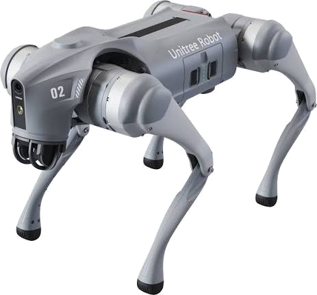

Unitree Go2Simulation platform
FAST-LIO RMSE0.220 m (evo)
EnvironmentDocker · ROS2 Humble
Research · Simulation
2026 · In progressLIO vs. VIO Comparison with EKF Fusion & Nav2 — Unitree Go2
0.220 mRMSE for the FAST-LIO baseline (mean 0.197 m, max 0.533 m), evaluated with evo trajectory metrics.
A fully simulated, Dockerised ROS2 Humble pipeline that compares LiDAR-Inertial (FAST-LIO) and Visual-Inertial (VINS-Fusion) odometry on a Unitree Go2 quadruped. The FAST-LIO baseline is complete; VINS-Fusion, robot_localization EKF fusion and Nav2 autonomous navigation are being added for a final three-way comparison.
ROS2 HumbleDockerFAST-LIOVINS-FusionNav2EKFevo